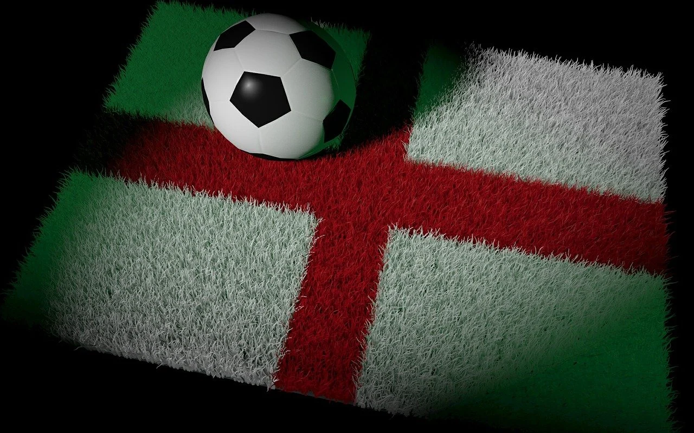

Sobre:
País de riqueza histórica e cultural com pouquíssimas nações que a equiparam em nível global, a Inglaterra possui enormes influências sobre o resto do mundo em diversas áreas. Para facilitar o entendimento, vamos abordar alguns dos traços mais marcantes do povo inglês e de sua cultura.
Football
Os inventores do futebol (“football” mesmo, e não “soccer”) ainda não enjoaram do esporte. Na Inglaterra, o fanatismo dos moradores é tão grande quanto a sua organização: a Premier League é a primeira divisão entre as quatro divisões profissionais. Além disso, há equipes amadoras da 5ª divisão à 11ª divisão, o que mostra o tamanho da influência do esporte na rotina dos britânicos.
